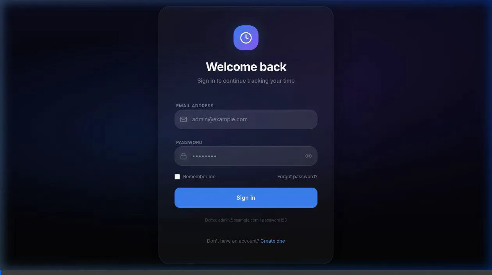

Account Registration
การลงทะเบียนบัญชีผู้ใช้
Create a new user profile, register your company instance, and onboard safely to the workspace environment.
ขั้นตอนการสร้างบัญชีผู้ใช้ใหม่ ลงทะเบียนเปิดสิทธิ์การใช้งานองค์กร และการเข้าสู่ระบบรักษาความปลอดภัยเบื้องต้น
Dashboard Navigation
ภาพรวมหน้าจอแดชบอร์ด
Familiarize yourself with timesheet widgets, active tasks indicators, visual work calendar, and general menu operations.
แนะนำการทำงานของแดชบอร์ดหลัก เช่น หน้าต่างลงเวลาด่วน ปฏิทินแสดงรอบเวลางาน และการนำทางเมนูทั่วไป

Project & Workspace Setup
การสร้างและตั้งค่าโครงการ
Initiate client projects, partition projects into strategic stages, set up resource pools, and allocate development tasks.
ขั้นตอนการจัดทำโครงการลูกค้า กำหนดระยะเวลาการดำเนินงานแต่ละระยะ จัดสรรกำลังคน และมอบหมายชิ้นงานหลัก
Work Breakdown Structure (WBS)
โครงสร้างการแบ่งงาน (WBS) และแผนภูมิแกนต์
Structure hierarchical tasks, enforce task dependencies, configure plan estimations, and inspect the Gantt timeline.
สร้างผังการแบ่งงานลำดับย่อย กำหนดการเชื่อมต่อและความสัมพันธ์ระหว่างงาน วางแผนปริมาณกำลังคน และดูภาพรวมผ่านแผนภูมิแกนต์

Team & Member Onboarding
การจัดการทีมงานและนำเข้าข้อมูล
Import corporate members using standardized Excel spreadsheets, maintain manager reporting relationships, and customize team structure.
การลงทะเบียนสมาชิกทีมจำนวนมากผ่านไฟล์เทมเพลต Excel จัดความสัมพันธ์การขึ้นตรงต่อหัวหน้าทีม และปรับเปลี่ยนบทบาทผู้ใช้

Time Logging & Submissions
การบันทึกชั่วโมงทำงานและส่งรายงาน
Log operational hours via Quick Log, review weekly timesheet draft entries, and submit logs for administrative validation.
การลงบันทึกชั่วโมงปฏิบัติงานรายวัน ตรวจสอบแบบร่างบันทึกเวลารายสัปดาห์ และส่งคำขออนุมัติอย่างเป็นทางการ

Resource Analytics & Heatmaps
การวิเคราะห์ประสิทธิภาพและกำลังคน
Analyze team capacity heatmaps, track utilization rates, assess planned-vs-actual variance, and project allocation constraints.
วิเคราะห์ตารางแผนภูมิความร้อนของบุคลากร เปรียบเทียบชั่วโมงงานตามแผนกับที่ลงปฏิบัติงานจริง และประเมินเพื่อลดปัญหาการทำงานหนักเกินไป

Superadmin Config & Branding
การกำหนดค่าระบบและการทำแบรนด์องค์กร
Apply white-label customization including theme branding colors, upload organization logos, and audit isolation profiles.
การจัดการธีมส่วนกลางขององค์กร อัปโหลดโลโก้บริษัท ปรับเปลี่ยนสีองค์ประกอบหลักเพื่อควบคุมอัตลักษณ์ และการเข้าถึงระบบแบบแยกผู้เช่า